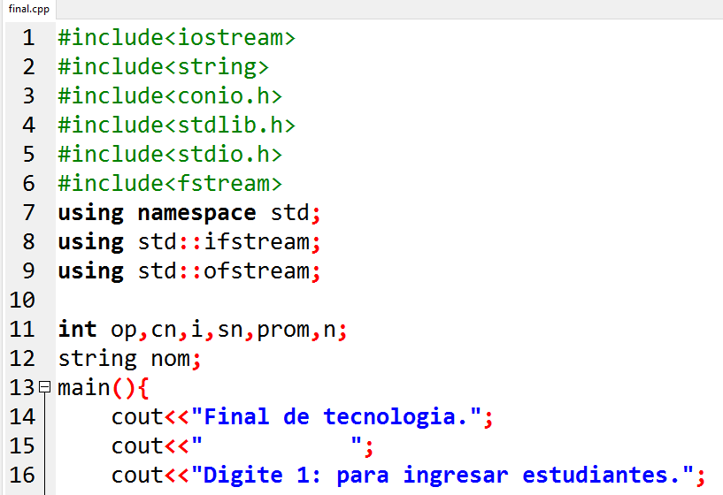
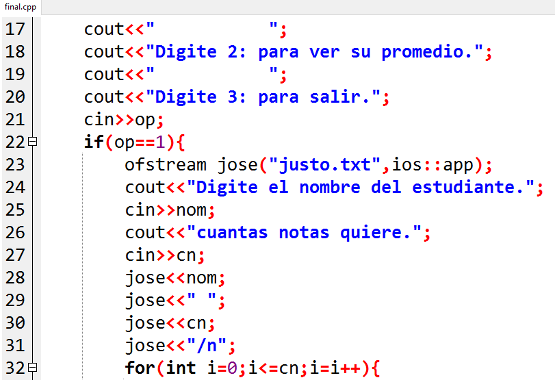
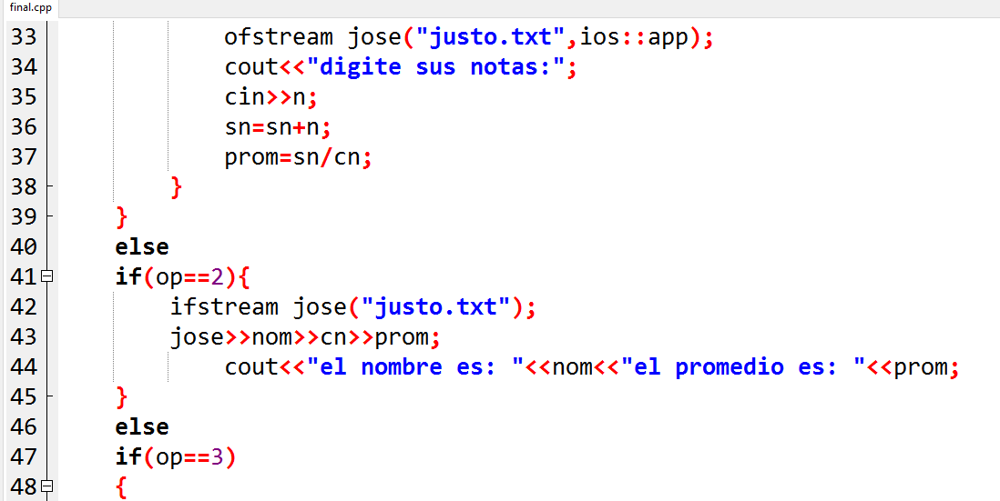
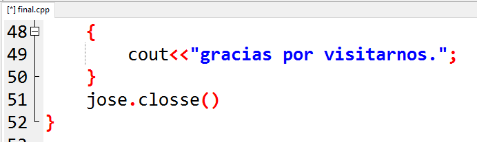

FINAL




Este final no solo nos pone a prueba, sino tambien que nos hace dar cuenta de todo lo que hemos aprendido en el transcurso de los grados, puede observara que aunque mi aprendizaje no es mucho me pude percatar que la diferencia es mucha desde cuando empezamos a programara hasta hoy. feliz tarde.